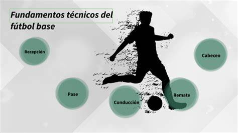
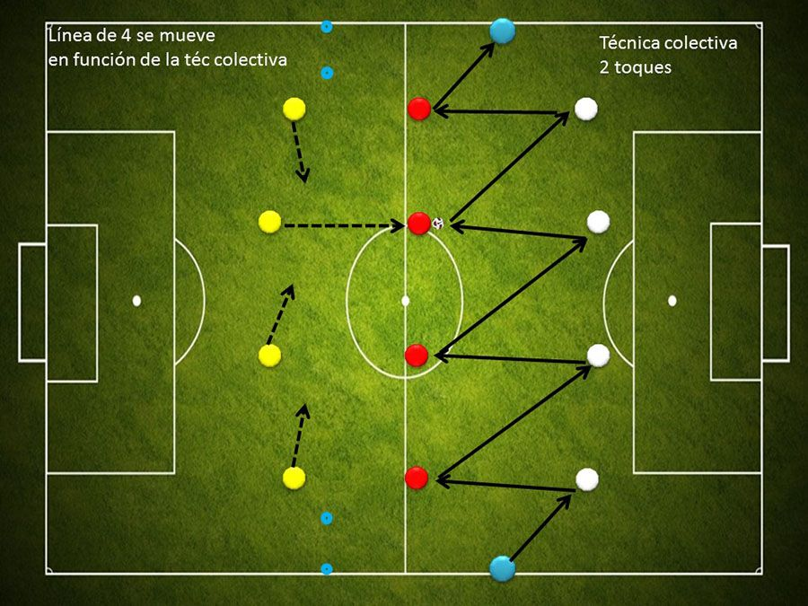
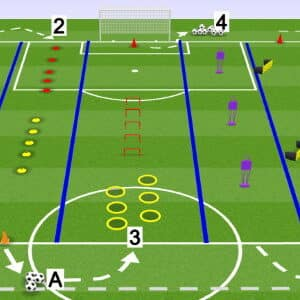
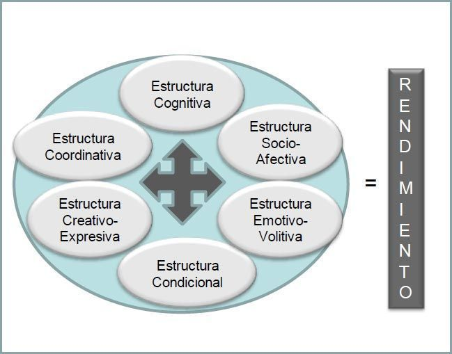

-El entrenamiento de fútbol moderno va más allá de la simple ejecución de ejercicios. Busca formar futbolistas completos, capaces de rendir al máximo nivel físico, técnico, táctico y mental. Estos consejos están diseñados para guiar a jugadores, entrenadores y padres en el proceso de desarrollo deportivo, cubriendo desde las bases hasta las exigencias del alto rendimiento.
1. Fundamentos Técnicos: La Base de Todo
La técnica individual es el lenguaje del futbolista. Dominarla permite ejecutar acciones de juego de manera eficiente y resolver situaciones con mayor facilidad.
- Dominio del Balón: Dedica tiempo diario al contacto con el balón.
- Conducción: Practica la conducción con ambas piernas, variando la velocidad y el tipo de toque (corto para control, largo para avance). Incluye ejercicios de slalom y cambios de dirección.
- Control Orientado: Aprende a recibir el balón y, en el mismo movimiento, dirigirlo hacia el espacio deseado para la siguiente acción. Es crucial para la fluidez del juego.
- Pase: Trabaja la precisión y la potencia en pases cortos, largos, con efecto y a diferentes alturas. Utiliza ambos perfiles (pierna buena y pierna menos hábil).
- Recepción: Domina diferentes tipos de recepciones (con el empeine, el muslo, el pecho) para amortiguar el balón y prepararlo para la siguiente jugada.
- Regate: Desarrolla la habilidad para superar a un oponente. Practica fintas, cambios de ritmo y dirección, y el uso del cuerpo para proteger el balón.
- Tiro a Portería: Mejora la técnica de golpeo con el interior, exterior y empeine. Trabaja la colocación, la potencia y la precisión, tanto en estático como en movimiento.
- Entrenamiento Específico: Dedica sesiones exclusivas a mejorar la pierna menos hábil. La simetría en el dominio técnico es una ventaja competitiva enorme.

2. Inteligencia Táctica: Leer y Dominar el Juego
El fútbol es un deporte de situación. La capacidad de leer el juego y tomar decisiones correctas es tan importante como la habilidad técnica.
- Comprensión del Juego:
- Posicionamiento: Entiende tu rol y el de tus compañeros en las diferentes fases del juego (ataque, defensa, transición). Aprende a ocupar los espacios de manera inteligente.
- Visión Periférica: Desarrolla la costumbre de mirar a tu alrededor antes de recibir el balón para saber dónde están tus compañeros, rivales y los espacios libres.
- Toma de Decisiones: Practica la elección correcta: ¿paso, conducción, tiro, desmarque? Esta habilidad se mejora con la experiencia y el análisis.
- Conceptos Tácticos Clave:
- Presión: Aprende cuándo y cómo presionar al rival para recuperar el balón.
- Coberturas: Entiende la importancia de cubrir el espacio de un compañero que sale a presionar o a realizar una acción.
- Transiciones: Domina la rapidez y eficacia al pasar de defensa a ataque (contraataque) y de ataque a defensa (repliegue).
- Creación de Espacios: Aprende a desmarcarte para ofrecer líneas de pase o a generar espacios para tus compañeros con tus movimientos.
- Análisis y Observación: Ve partidos de fútbol prestando atención a los aspectos tácticos. Analiza cómo se mueven los jugadores de tu posición, cómo se organizan los equipos y cómo resuelven situaciones complejas.

3. Preparación Física: El Motor del Rendimiento
Un cuerpo bien preparado es fundamental para ejecutar las acciones técnicas y tácticas de manera sostenida y con potencia.
- Capacidades Condicionales:
- Resistencia: Desarrolla tanto la resistencia aeróbica (para aguantar todo el partido) como la anaeróbica (para esfuerzos de alta intensidad intermitentes). Incluye fartlek, series de carrera y ejercicios continuos.
- Velocidad: Trabaja la velocidad de reacción (salida de tacos), la velocidad máxima y la aceleración. Los sprints cortos y explosivos son clave.
- Fuerza: Fortalece la musculatura general, con énfasis en el core (abdominales y lumbares), piernas y tren superior. Incluye ejercicios de fuerza máxima, fuerza-resistencia y potencia (pliometría).
- Flexibilidad y Movilidad: Realiza estiramientos dinámicos antes del entrenamiento y estáticos después. Trabaja la movilidad articular para prevenir lesiones y mejorar el rango de movimiento.
- Prevención de Lesiones: Un programa de entrenamiento debe incluir ejercicios específicos para fortalecer las zonas más propensas a lesionarse (tobillos, rodillas, isquiotibiales, aductores). El trabajo de propiocepción (equilibrio) es vital.
- Nutrición e Hidratación:
- Alimentación Equilibrada: Consume una dieta rica en carbohidratos complejos (energía), proteínas (reparación muscular), grasas saludables, vitaminas y minerales.
- Hidratación Constante: Bebe agua antes, durante y después del entrenamiento y los partidos. Evita la deshidratación, que merma el rendimiento y aumenta el riesgo de lesiones.
- Comidas Estratégicas: Adapta tu ingesta a los horarios de entrenamiento y competición (comida pre-partido, recuperación post-esfuerzo).

4. Aspectos Psicológicos: La Fortaleza Mental
La mente es tan importante como el cuerpo. Un futbolista mentalmente fuerte puede superar adversidades y rendir bajo presión.
- Mentalidad Ganadora: Desarrolla una actitud positiva y proactiva. Cree en tus capacidades y en las de tu equipo.
- Concentración: Aprende a mantener la atención en el juego, ignorando distracciones. La concentración se entrena mediante ejercicios específicos y la práctica constante.
- Gestión de la Presión: Enfréntate a situaciones de estrés (partidos importantes, errores) con calma. Utiliza técnicas de respiración o visualización para mantener el control.
- Resiliencia: La capacidad de recuperarse de los fracasos, los errores o las derrotas es crucial. Aprende de cada experiencia negativa y úsala como motivación para mejorar.
- Motivación: Encuentra las fuentes de tu motivación (amor por el juego, superación personal, objetivos grupales) y trabaja para mantenerla alta a largo plazo.
- Autoconfianza: Construye tu confianza a través de la preparación, el entrenamiento constante y la celebración de los pequeños logros.

5. Hábitos y Estilo de Vida del Deportista
El rendimiento deportivo no se limita a las horas de entrenamiento. Un estilo de vida saludable es fundamental.
- Descanso Adecuado: El sueño es el principal proceso de recuperación. Asegúrate de dormir entre 7 y 9 horas diarias.
- Disciplina: Sé riguroso con tus horarios de entrenamiento, comidas y descanso. La disciplina es la clave para alcanzar objetivos a largo plazo.
- Aprendizaje Continuo: Muestra interés por aprender. Pregunta a tus entrenadores, lee sobre tácticas, observa a profesionales. El fútbol está en constante evolución.
- Trabajo en Equipo: El fútbol es un deporte colectivo. Fomenta la buena relación con tus compañeros, apoya al equipo y celebra los éxitos juntos.
Estos consejos proporcionan una guía completa para el desarrollo integral de un futbolista. La clave reside en la constancia, la disciplina y la pasión por el deporte, combinando el trabajo duro en cada una de estas áreas para alcanzar el máximo potencial.
|